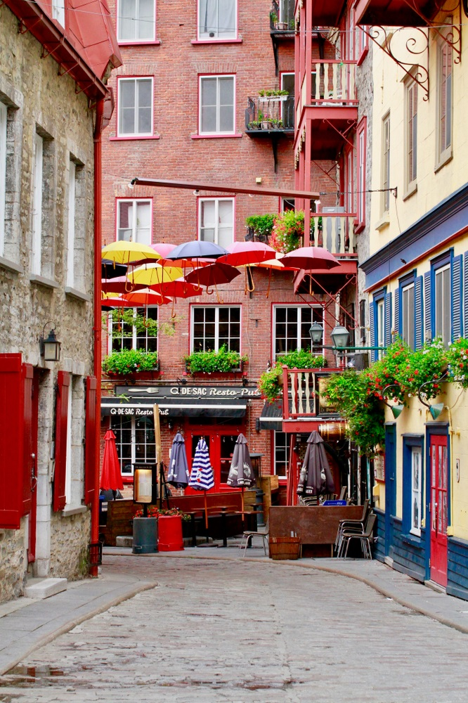
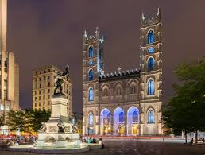

QUEBEC
Québec, en forme longue la Ville de Québec, est la capitale nationale du Québec, une des provinces du Canada. Située au cœur de la région administrative de la Capitale-Nationale, elle est le siège de nombreuses institutions dont le Parlement du Québec. En 2021, la ville de Québec compte 549 459 habitants et sa communauté métropolitaine regroupe une population de 800 296 habitants. Fondée en 1608 par Samuel de Champlain, Québec est une des plus anciennes villes d'Amérique du Nord. Le rétrécissement du fleuve Saint-Laurent entre les villes de Québec et de Lévis, sur la rive opposée, a donné le nom à la ville, Kébec étant un mot algonquin signifiant « là où le fleuve se rétrécit ». Les remparts font de Québec la seule ville fortifiée subsistant au nord du Mexique. Le Vieux-Québec a été déclaré patrimoine mondial en 1985 par l'UNESCO.
 